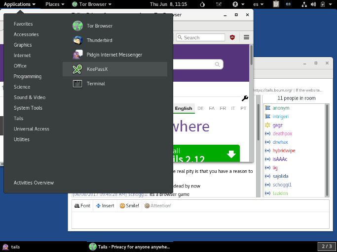
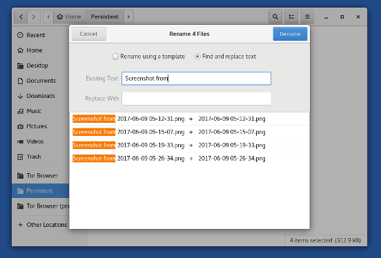
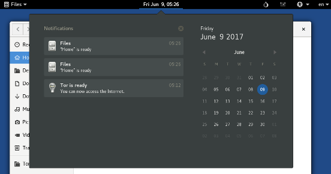

Nous avons la fierté de vous présenter Tails 3.0, la première version de Tails basée sur Debian 9 (Stretch). Elle apporte une expérience de démarrage et d'extinction complètement nouvelle, un grand nombre de peaufinages du bureau, des améliorations en profondeur de la sécurité et une mise à jour majeure de nombreux logiciels inclus.
Debian 9 (Stretch) sortira le 17 juin. C'est la première fois que nous sortons une nouvelle version de Tails presque en même temps que la version de Debian sur laquelle elle est basée. C'était un objectif important pour nous car cela bénéficie à la fois aux personnes utilisant Tails et aux personnes utilisant Debian en général et cela renforce notre relation :
- Les personnes utilisant Tails peuvent bénéficier plus tôt des changements cools faits dans Debian.
- Nous pouvons détecter et corriger des problèmes dans la nouvelles version de Debian pendant qu'elle est en développement ainsi notre travail bénéficie également plus tôt à Debian.
Cette version corrige également plusieurs failles de sécurité et la mise à jour doit être faite dès que possible.
Changements
Nouvelles fonctionnalités
Nouvelle expérience de démarrage et d'extinction
Tails Greeter, l'application pour configurer Tails au démarrage, a été complètement repensé pour faciliter son usage :
- Toutes les options sont disponibles depuis une seule fenêtre.
- Les paramètres de langue et de région sont affichés en premier pour aider notre audience internationale.
- Les options d'accessibilité peuvent être activées dès le départ.
Cela a été un long processus, démarré il y a trois ans avec l'équipe UX de NUMA Paris et mené uniquement par des bénévoles. Rejoignez-nous sur tails-dev@boum.org pour participer aux futures designs !

L'expérience d'extinction a été également repensée afin d'être :
- Plus fiable. Elle crashait sur différents ordinateurs avec des résultats imprévisibles.
- Plus discrète. L'écran est désormais totalement noir pour sembler moins suspect.
Techniquement parlant, il utilise désormais la fonction freed memory poisoning du noyau Linux.
Peaufinage du bureau
Nous sommes passé au thème noir par défaut de GNOME qui a un aspect plus moderne et plus discret :

Tails 3.0 bénéficie de nombreuses petites améliorations du bureau GNOME :
Fichiers a été remanié pour réduire le désordre et rendre l'interface plus facile à utiliser. Plusieurs nouvelles fonctionnalités ont été ajoutées, comme la possibilité de renommer plusieurs fichiers en même temps et d'extraire les fichiers compressés sans avoir besoin d'un logiciel séparé.

La zone de notification a été améliorée pour permettre un accès facile aux précédentes notifications. Les popups de notification ont également été repositionnés pour les rendre plus visibles.

Des fenêtres de raccourcis ont été ajoutées pour aider à découvrir les raccourcis clavier dans les applications GNOME.
Par exemple, appuyez sur Ctrl+F1 dans Fichiers pour afficher sa fenêtre de raccourcis.
Améliorations en profondeur de la sécurité
Tails 3.0 marche uniquement sur les ordinateurs 64 bits et plus sur les ordinateurs 32 bits. Abandonner le support de matériel, même si cela concerne une petite portion des personnes utilisant Tails, est toujours une décision difficile à prendre mais être seulement en 64 bits apporte d'importants bénéfices de sécurité et de fiabilité. Par exemple, pour protéger contre plusieurs types de failles de sécurité, supporter le NX Bit est incontournable et la plupart des binaires sont renforcés avec PIE qui permet la distribution aléatoire de l'espace d'adressage.
Démarrez n'importe quelle version de Tails.
Pour ouvrir un terminal choisissez .
Exécutez la commande suivante pour afficher les informations système :
uname -mSi la sortie est
x86_64, votre ordinateur est 64 bits et Tails 3.0 devrait marcher.Si la sortie est
i686, votre ordinateur est 32 bits et Tails 3.0 ne marchera pas.
- Mise à jour du navigateur Tor vers la version 7.0.1 (basé sur Firefox 52 ESR) qui est multi-processus et cela ouvre la voie au bac à sable du contenu. Cela permet de rendre plus difficile l'exploitation d'une faille de sécurité dans la navigateur.
Mises à jour majeures des logiciels inclus
- La plupart des logiciels inclus ont été mise à jour dans Debian 9, par exemple :
- KeePassX de la version 0.4.3 à la version 2.0.3
Votre base de données de mots de passe devrait être automatiquement convertie vers le nouveau format de KeePassX 2. - LibreOffice de la version 4.3.3 à la version 5.2.6
- Inkscape de la version 0.48.5 à la version 0.92.1
- Audacity de la version 2.0.6 à la version 2.1.2
- Enigmail de la version 1.8.2 à la version 1.9.6
- MAT de la version 0.5.2 à la version 0.6.1
- Dasher de la version 4.11 à la version 5.0
- git de la version 2.1.4 à la version 2.11.0
- KeePassX de la version 0.4.3 à la version 2.0.3
Mises à jour et changements
L'icône de notification Pidgin a été supprimée de la barre de navigation supérieure et remplacée par des fenêtres de notification.
Icedove a été renommé en Thunderbird, son nom original, héritant du changement venant de Debian.
La barre de recherche et la fonction de recherche dans la barre d'adresse du Navigateur non-sécurisé ont été enlevés. (#12540)
L'option lecture-seule de la persistance a été enlevée. Elle était utilisée par peu de personnes, créait de la confusion et provoquait des problèmes inattendus. (#12093)
Problèmes corrigés
Le nouveau serveur d'affichage X.Org dans Tails 3.0 devrait marcher avec plus de cartes graphiques récentes.
Le démarrage UEFI a été corrigé sur quelques machines (ThinkPad X220).
L'usurpation d'adresse MAC a été corrigée sur certaines interfaces réseau (TP-Link WN725N). (#12362)
Pour plus de détails, lisez notre liste des changements.
Problèmes connus
L'Installeur de Tails rejette par erreur certaines clés USB. Quand cela arrive, un message commençant par "Skipping non-removable device" s'affiche (#12696). Pour contourner ce problème :
Démarrez le système d'exploitation que vous voulez utiliser avec l'Installeur de Tails.
Si vous voulez utiliser l'Installeur de Tails dans Tails 3.0, définissez un mot de passe d'administration.Choisissez pour ouvrir un terminal avec les droits d'administration.
Exécutez la commande suivante pour corriger le bug dans l'Installeur de Tails :
perl -pi -E 's,media_removable,removable,' /usr/lib/python2.7/dist-packages/tails_installer/creator.py
L'Installeur de Tails ne devrait plus afficher ce problème… jusqu'à ce que vous redémarriez Tails, puisque ces changements seront annulés au moment du redémarrage.
Tails n'arrive pas à démarrer sur certains ordinateurs avec une carte graphique Intel.
Plusieurs personnes ont signalés des problèmes durant la migration de Icedove vers Thunderbird, en particulier que Thunderbird ne démarre pas.
Si cela vous arrive, merci de nous envoyer un rapport WhisperBack sans redémarrer Tails.
Voir la liste des problèmes connus de longue date.
Obtenir Tails 3.0
Pour l'installer, suivez nos instructions d'installation.
Pour mettre à jour, tout le monde doit faire une mise à jour manuelle.
Et ensuite ?
Tails 3.1 est prévu pour le 8 août.
Jetez un œil à notre feuille de route pour savoir ce que nous avons en tête.
Nous avons besoin de votre aide et il y a de nombreuses manières de contribuer à Tails (faire un don est seulement l'une d'entre elles). Venez discuter avec nous !